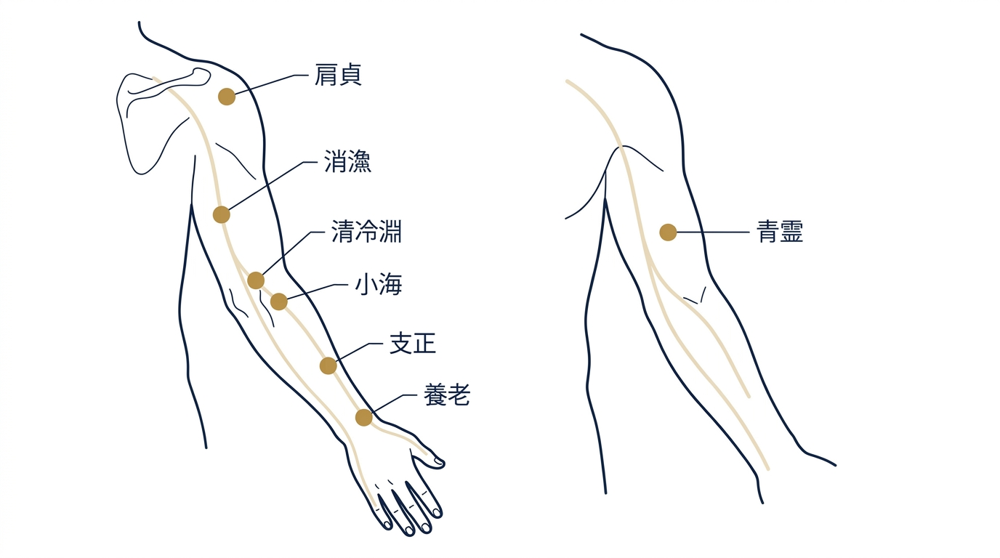

銀座そうぜん鍼灸院の臨床解説では、小指・薬指半分のみのしびれ（最多・鍼灸が極めて有効）、前腕まで広がるしびれ、肩痛併発（胸郭出口由来）では早期改善が期待しやすい一方、肘屈曲時に脇〜指へ響くタイプは第8頸神経障害や狭心症サインとの鑑別を重視しています。改善時は特徴的に「薬指 → 小指球（小指の腹） → 小指」の順にしびれが引いていく経過をたどります。

| ツボ名（経穴） | 位置の目安 | 主な狙い・役割 | セルフケアの注意点 |
|---|---|---|---|
| 小海（しょうかい） | 肘後ろ内側、肘頭と内側上顆の間のくぼみ | 尺骨神経溝直上の局所調整、前腕内側のしびれケア | 神経真上のため強圧厳禁。電撃痛が出たら即中止 |
| 支正（しせい） | 手首（陽谷）と肘（小海）の中間付近、前腕尺側の骨際 | 前腕尺側の筋緊張緩和、腕のしびれ・首肩こり軽減 | 親指腹で5〜6秒優しく押圧。しびれ増強する強圧NG |
| 清冷淵（せいれいえん） | 二の腕後面、肘頭から指3本分上のくぼみ | 上腕三頭筋の過緊張緩和、腕〜手指の冷え・しびれ改善 | 心地よい強さでゆっくり。筋肉を潰す強揉みは避ける |
| 消濼（しょうれき） | 上腕後面、清冷淵からさらに指4本分ほど上 | 上腕後面深層の緊張を緩め肘への牽引ストレスを軽減 | 肘を深く曲げたまま長時間押さない |
| 養老（ようろう） | 手首小指側、尺骨頭の手背側くぼみ | 手首〜前腕尺側の循環改善、小指・薬指のこわばり緩和 | 骨直上のため爪を立てず指腹で軽く |
| 肩貞（けんてい） | 後ろの脇のシワ上端から指2本分上 | 肩甲下筋・上腕三頭筋長頭の緩和（近位絞扼対策） | 揉み返しが出やすいため温熱ケア中心が安全 |
| 青霊（せいれい） | 上腕内側、肘内側シワから脇へ指4本分上 | 上腕内側の尺骨神経周囲の血流促進・放散痛緩和 | 上腕動脈・神経近接のため強いグリグリ押し厳禁 |
肘部管症候群単独の大規模RCTは国際的にも限られるため、直接症例集積・神経再生報告に加え、末梢神経障害（尺骨神経含む）のメタ解析および安全性警告事例をあわせて紹介します。
| 年・研究デザイン | 対象・規模 | 主な結果と臨床的意義 | 限界・出典 |
|---|---|---|---|
| 2019年 症例集積 | 保存療法無効の右肘部管症候群 3例 | 肘部管へのドライニードリング週2回×2週で全例が疼痛消失・完全機能回復、6か月追跡でも維持。 | n=3・対照群なし。Physiother Theory Pract (PMID: 29528796) |
| 2014年 症例報告 | 肘部管症候群 中年男性（n=1） | 筋筋膜性アプローチとしてのドライニードリング治療経過を報告。 | レター形式・n=1。Acupunct Med (PMID: 24525518) |
| 2016年 症例報告 | 尺骨神経完全断裂後の32歳男性（n=1） | 肘部管への週1回電気鍼＋リハでR&L総スコア0.703を達成し75日で復職。 | 外傷性断裂n=1（絞扼性への直接外挿は注意）。Complement Ther Med (PMID: 26860810) |
| 2021年 データマイニング | 電気鍼×末梢神経障害 778論文（尺骨神経含む） | 近部＋神経幹走行沿いの選穴が中心で、13疾患のほぼ全てで高い臨床有効率を報告。 | 中国語文献中心の記述的集計。Zhen Ci Yan Jiu (PMID: 33798299) |
| 2020年 メタ解析 | 糖尿病性末梢神経障害 18 RCTs（計1,200名） | ビタミンB単独比で臨床有効率および尺骨神経を含む4末梢神経の伝導速度を有意改善（P<0.05）。 | 糖尿病性神経障害が対象（間接根拠）。Biomed Res Int (PMID: 33954169) |
| 2017年 安全性警告例 | 肘内側への蜂針療法を受けた52歳男性（n=1） | 蜂毒注入直後に尺骨神経損傷を発症。肘部管の浅層神経への過度な直接刺激・薬液注入リスクを示す重要事例。 | 通常の毫鍼ではなく蜂針による有害事象。Ann Rehabil Med (PMID: 28758087) |
⚠ 整形外科・手外科・循環器科の受診を最優先すべきサイン
小指球や親指・人差し指間の筋萎縮、指が伸びきらない鷲手変形、急激な握力低下・箸使い困難、肘内側のしこり（ガングリオン等）、また左脇〜小指のしびれに胸痛・圧迫感・冷や汗を伴う場合（狭心症・心筋梗塞の放散痛）は、直ちに専門医療機関を受診してください。